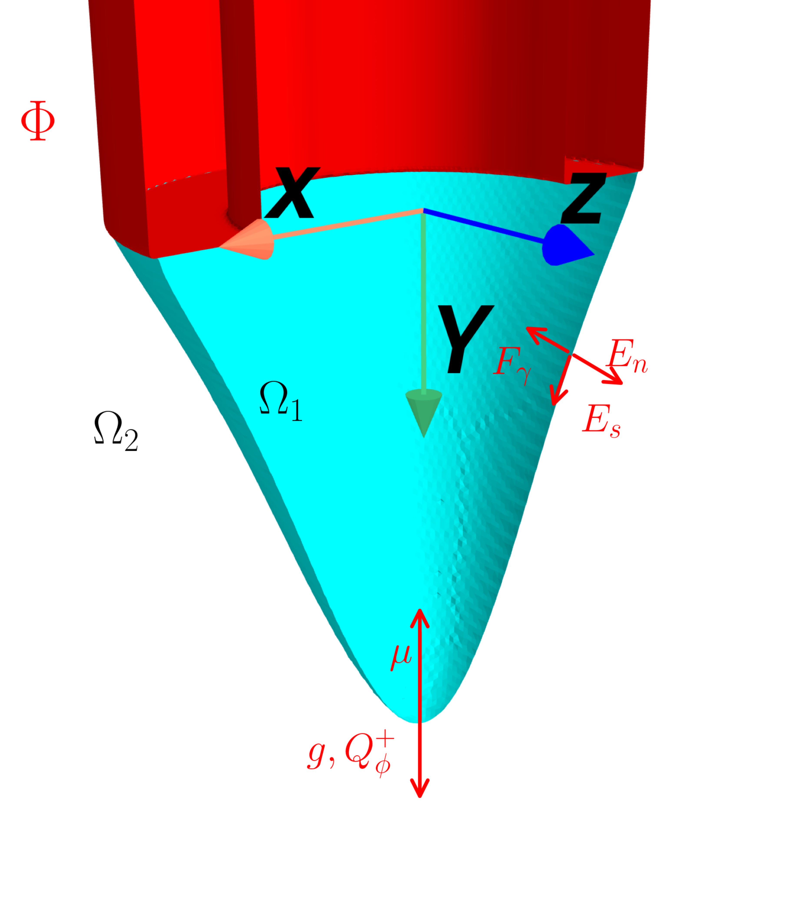
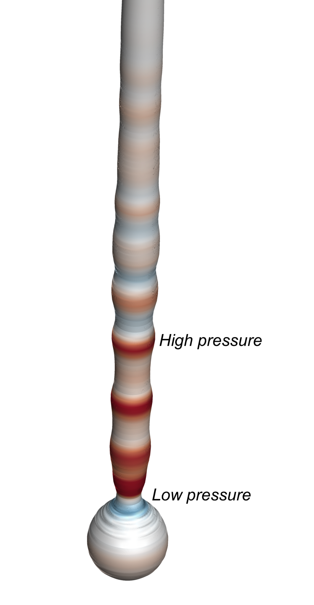
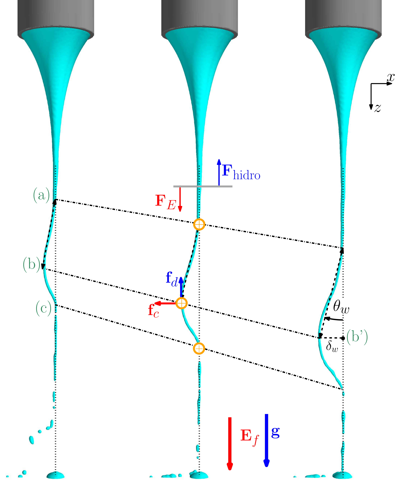

2. Fundamentals of Electrohydrodynamic Jets
Electrohydrodynamic jets arise from the interaction of electromechanical forces within a fluid subjected to an electric field. This chapter provides a detailed description of these mechanisms.
2.1. Taylor Cone Principle
When a liquid is subjected to an external electric field, and when this field is sufficiently intense, a sharp liquid cone may form. If the operating conditions allow it, a thin jet is emitted from its apex. This cone is known as the “Taylor cone”, in honour of the physicist Geoffrey Ingram Taylor, who made significant contributions to the understanding of this effect during the 1960s (Taylor, 1964). The formation of a Taylor cone is a direct manifestation of the interaction between electrostatic forces and surface-tension forces. Under the influence of an electric field, electrical charges accumulate at the liquid surface. Repulsion between charges of the same sign produces a force that opposes surface tension, which tends to maintain a cohesive and uniform liquid surface, such as the conventional shape of a meniscus. When the electrostatic force overcomes surface tension, the cone emits an electrohydrodynamic jet. This cone is shown in Figure 2.1, where the liquid is represented by \( \Omega_1 \), while the external environment, air, is represented by \( \Omega_2 \). The same figure shows a capillary nozzle held at an electric potential \( \Phi \), through which the liquid enters.
The forces acting on the Taylor cone are:- Electric Force (Maxwell Force): \[ \mathbf{f}_{e} = \rho_e \mathbf{E} \]
- Surface-Tension Force: \[ \mathbf{f}_{\gamma} = \gamma \nabla S \]
- Polarization Force: \[ \mathbf{f}_{Q^+} = \nabla \cdot (\mathbf{P} \otimes \mathbf{E}) - \mathbf{P} \cdot \nabla \mathbf{E} \]
- Gravitational Force: \[ \mathbf{f}_{g} = \rho \mathbf{g} \]
- Viscous Forces: \[ \mathbf{f}_{\mu} = \mu \nabla^2 \mathbf{u} \]
- Pressure Force: \[ \mathbf{f}_{p} = -\nabla p \]

2.2 Governing Equations
Taylor cone jets are treated as an immiscible electrohydrodynamic flow problem. The governing equations for this flow can be derived as a particular case of magnetohydrodynamics (MHD). This section describes the governing equations and the simplifications introduced to obtain the electrohydrodynamic (EHD) formulation. The governing equations for incompressible, isothermal and unsteady flow are the Navier–Stokes equations and the continuity equation.
We initially consider an incompressible, isothermal and unsteady flow. Consider a domain \( \Omega_0 \) over a time interval \( t \in [0, T] \). The governing equations for the conservation of mass, momentum, electric-charge density and electric field are presented below:
Conservation of Mass (Continuity Equation): \[ \quad \nabla \cdot \mathbf{u} = 0, \quad \text{in } \Omega_0 \times [0, T]. \] Conservation of Momentum: \[ \quad \rho \left( \frac{\partial \mathbf{u}}{\partial t} + \mathbf{u} \cdot \nabla \mathbf{u} \right) = -\nabla p + \mu \nabla^2 \mathbf{u} + \mathbf{f}, \quad \text{in } \Omega_0 \times [0, T]. \] Conservation of Electric-Charge Density: \[ \quad \frac{\partial \rho_{e}}{\partial t} + \nabla \cdot\left(\rho_{e} \vec{u} \right) + \nabla \cdot (\sigma \vec{E}) = 0. \] Electric Field: \[ \quad -\varepsilon \nabla^2 \phi_e = \rho_{e}. \]In terms of the forces acting on droplets emitted by an EHD jet, the droplets are subjected to an electric force of the order of \(\sim \mathbf{f}_e \equiv \varepsilon_0 \phi_e^2\), a gravitational force acting in the same direction as the electric field and of the order of \(\sim \mathbf{f}_g \equiv \rho d_d^3 \mathbf{g}\), an inertial force associated with the momentum injected through the nozzle, such that \( \mathbf{f}_p \equiv \rho Q_i^2 / D_i^2$\), and finally a capillary force opposing the electric field, of the order of $\sim \mathbf{f}_{\gamma} \equiv \gamma D_0$ \footnote{Here, the external nozzle diameter \(D_0\) is used under conditions in which the Taylor cone wets the nozzle and remains attached to the nozzle edge. Even when this is not the case, it may be assumed that \(D_0/D_i \sim 1\).}.
In summary, the governing equations described here are based on the following assumptions and simplifications:- Incompressible flow. The fluid density is assumed to remain constant and not vary with pressure or other variables.
- Immiscible fluids. The different fluids, or phases, do not mix and maintain a distinct interface.
- Negligible induced stresses. Stresses resulting from electromagnetic effects are neglected.
- Laminar flow. Turbulence and its associated complexities are neglected.
- Steady electric field. Temporal variations in the electric field are neglected.
- Fixed geometry. The structure or geometry containing the fluid does not deform or move in response to the flow or external forces.
- Constant fluid properties. Viscosity and other relevant properties are assumed to remain constant.
- Isothermal conditions. No temperature variation occurs within the domain.
- No evaporation. The fluids do not evaporate, regardless of the operating conditions.
- Conserved electric charge. The electric charge within the fluid is conserved.
2.3. Types of Instability
Rayleigh–Plateau

Bending/Whipping

Coulomb Expansion